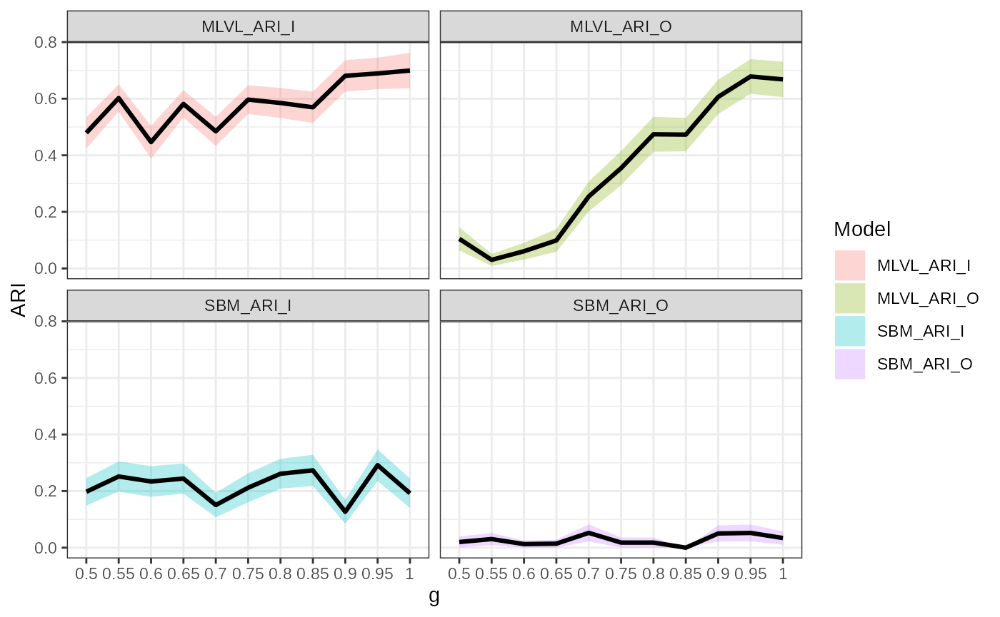
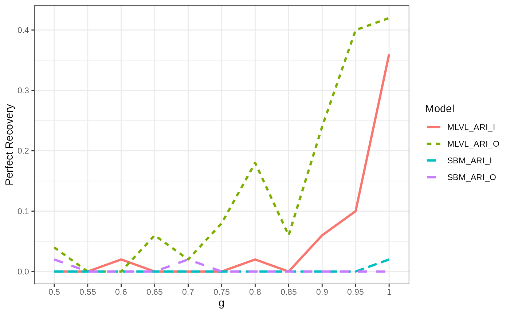
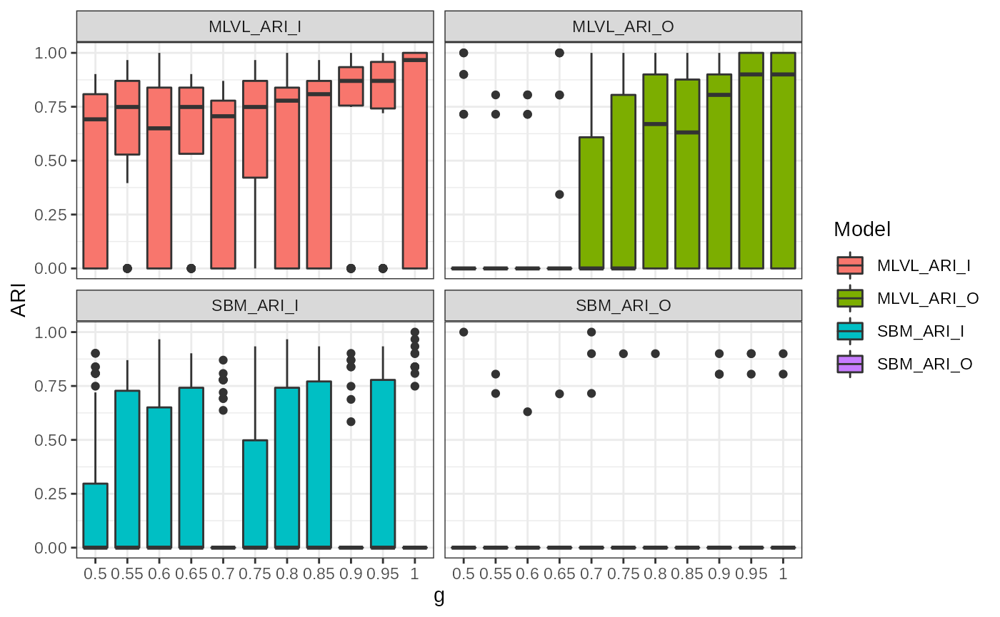

vignettes/articles/hard_to_infer.Rmd
hard_to_infer.RmdIn this vignette we are interested in the behavior of our inference algorithm when both level of our multilevel network are hard to infer.
For a standard Stochastic Block Model, a well known result is the detectability threshold when the mesoscale structure is the one of a planted partition, i.e. the connectivity parameter matrix has the following shape: \[\begin{pmatrix} p & q \\ q & p \end{pmatrix},\] where \(p\) and \(q\) are the connection probabilities for respectively an intra-block interaction and an extra-block interaction.
Let define a multilevel network with 120 individuals belonging to one of 2 blocks of individuals and 40 organizations belonging to one of 2 blocks of organizations of equal size on average.
Q <- list(I = 2, O = 2)
n <- list(I = 60*Q$I, O = 20*Q$O)
pi <- rep(1/Q$O, Q$O)
gamma <- .1 * (diag(8, Q$I, Q$O) + 2/Q$I)Then the detectability threshold for each level is given by:
Re(detect_threshold(120, .1))
#> [1] 0.0500000 0.1666667for the inter-individual level and
Re(detect_threshold(40, .1))
#> [1] 0.02192236 0.22807764for the inter-organizational level.
So we will fix the connectivity parameters a little bit above the detectability threshold in order to get a very challenging inference for a single level SBM and to see how the information in each level of the MLVSBM might help to recover the structure of the other level, and how does it vary with the strength of the inter-level dependence.
alpha <- list()
alpha$I <- matrix(c(.1, .21, .21, .1), 2, 2)
alpha$O <- matrix(c(.29, .1, .1, .29), 2, 2)Then simulate 50 networks for each value of \(\gamma\). Let recall that \(\gamma\) is the mixture parameter for the block membership of the individuals given the one of their respective organizations, for \(g \in [.5, 1]\), \[\begin{pmatrix} g & 1-g \\ 1-g & g \end{pmatrix}.\] So the two levels are independent when \(g = .5\) and the block membership of an individual is entirely determine by the block membership of his/her organization when \(g = 1\).
set.seed(42)
res_detect_thresh <- tibble()
for (g in seq(.5, 1, .05)) {
gamma <- matrix(c(g, 1-g, 1-g, g), 2, 2)
res <- pbmcapply::pbmclapply(
X = seq(50L),
FUN = function(i) {
mlvl <-
MLVSBM::mlvsbm_simulate_network(
n = n, Q = Q, pi = pi, gamma = gamma, alpha = alpha,
directed = list(I = FALSE, O = FALSE))
fit <- MLVSBM::mlvsbm_estimate_network(mlvl, nb_cores = 2L)
return(tibble("SBM_ARI_I" =
aricode::ARI(
c1 = mlvl$memberships$I,
c2 = mlvl$fittedmodels_sbm$lower[[which.max(mlvl$ICL_sbm$lower)]]$Z),
"SBM_ARI_O" =
aricode::ARI(
c1 = mlvl$memberships$O,
c2 = mlvl$fittedmodels_sbm$upper[[which.max(mlvl$ICL_sbm$upper)]]$Z),
"MLVL_ARI_I" = aricode::ARI(
c1 = mlvl$memberships$I,
c2 = fit$Z$I),
"MLVL_ARI_O" = aricode::ARI(
c1 = mlvl$memberships$O,
c2 = fit$Z$O)))
},
mc.cores = 6L)
res <- bind_rows(res)
res$g <- as.factor(g)
res_detect_thresh <- bind_rows(res_detect_thresh, res)
}
res_detect_thresh <- readRDS(file = "res_detect_thresh.rds")With \(g\), the diagonal entry of the mixture dependency parameter \(\gamma\), we notice that the greater the interdependence the better the levels are able to help each other in the recovery of the clustering. This is obvious from the beginning for the inter-organizational level which is slightly harder to infer. For the inter-individual we notice a great improvement when \(g \geq .9\). In all case, the problem is hard so we do not obtain a perfect recovery of the blocks every time.
res_detect_thresh %>%
pivot_longer(-g, names_to = "Model", values_to = "ARI") %>%
ggplot(aes(x = g, y = ARI, group = Model, fill = Model)) +
stat_summary(geom = "ribbon", fun.data = "mean_se", alpha = .3) +
stat_summary(geom = "line", fun = "mean", col = "black", size = 1.1) +
facet_wrap(~ Model) +
theme_bw()
res_detect_thresh %>%
group_by(g) %>%
summarise(across(.cols = everything(), ~mean(.x == 1)), .groups = "keep") %>%
pivot_longer(-g, names_to = "Model", values_to = "Perfect Recovery") %>%
ggplot(aes(x = g, y = `Perfect Recovery`, group = Model, col = Model, linetype = Model)) +
geom_line(size = 1.1) +
theme_bw()
res_detect_thresh %>%
pivot_longer(-g, names_to = "Model", values_to = "ARI") %>%
ggplot(aes(x = g, y = ARI, group = g, fill = Model)) +
geom_boxplot() +
facet_wrap(~ Model) +
theme_bw()